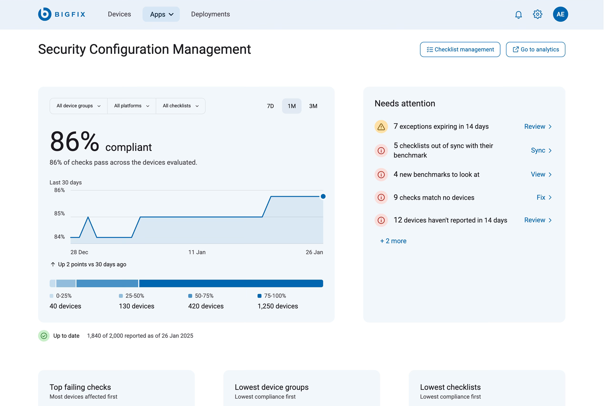
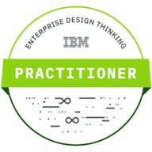
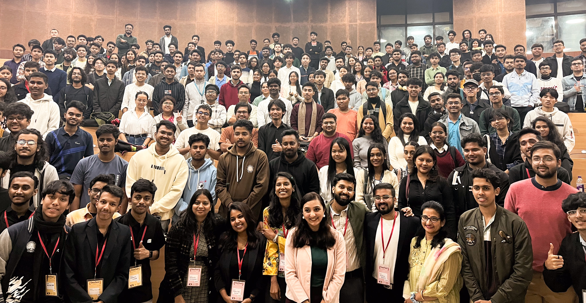

Designing agent-led user interviews with transparency and control for founders and trust for participants
- Independent designer
- ~85% first time set up success, ~68% interview completion rates
2026
View case study
Redesigning Urja into a calmer, clearer render farm for people who watch it all day
- Senior designer
- Design system guidelines, WCAG 2.0 Accessibility compliance, Faster error recovery
2025
View case study
Modernising the HCL BigFix's Security Compliance Management that manages 1.5M+ devices across 2500 organisations
- Senior designer
- Cut checklist creation time by ~44% for compliance managers, 2 additional modules adopted the approach
2024 - 2025
View case studyDesigning onboarding for HCL BigFix’s SaaS venture, and how it led me to influence product strategy.
- Senior designer
- Reusable guidance patterns, A phased onboarding strategy
2025
View case studyWhat people I have worked with say
"Sanchita stands out in UX. While many rely on outdated guidelines, she listens, learns, and champions user research."
"She is extremely reliable and capable of leading initiatives aimed at improving the customer satisfaction and experience."
"As a designer, Sanchita brings an exceptional blend of creativity, technical skill, and a user-centered approach to every project she undertakes."
"Since the very beginning, I have noticed her professionalism, skills, and care for the product she works on. She has repeatedly proven her incredible knowledge by solving complex problems with elegant and ingenious solutions."
Certificates
-

Enterprise Design Thinking PractitionerIBM Corporation - Human Computer InteractionThe Interaction Design Foundation
- Design for AccessibilityThe Interaction Design Foundation
- Master Card SortingO'Reilly Media
- Info Architecture EssentialsO'Reilly Media
Community & mentorship

"I just wanted to take a moment to thank you for being such an incredible mentor and teammate. You supported me, helped with tools, and made me feel included. Your constant encouragement made me a better designer and created a welcoming environment I will always be grateful for."
Drushti, HCL Softwares, India
"As you embark on your next journey, I want to take a moment to thank you for being an extraordinary mentor and guide. Your support has been invaluable, and your perspectives in cross functional meetings have been a remarkable example. Thank you so much for everything."
Tushar, HCL Softwares, India